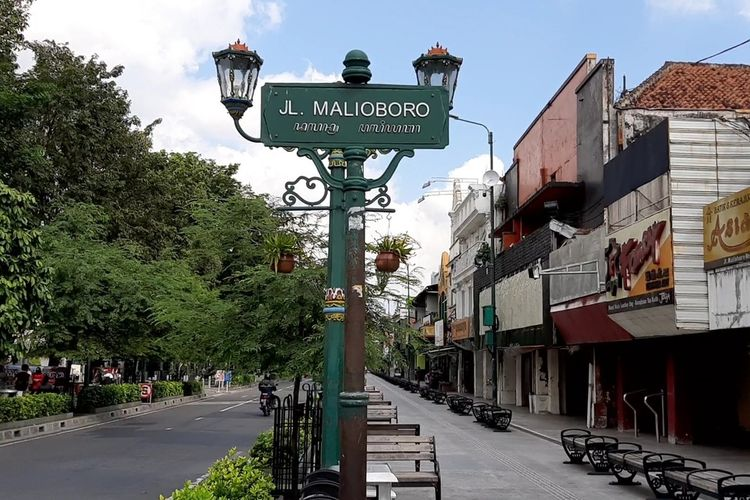
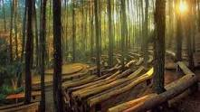
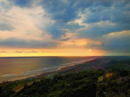

Malioboro Jogja

Siapa yang tidak tahu dengan kawasan Malioboro Jogja? Kawasan ini merupakan jantung kota serta simbol dari kota Yogyakarta. Bahkan sebagian orang serasa belum lengkap ketika datang ke Jogja belum mampir ke Malioboro. Tapi dibalik keistimewaan itu ada sejarah panjang tentang Malioboro.
Sejarah mengatakan dulu diawali dengan keberadaan Keraton Yogyakarta pada abad 18, jalan Malioboro Jogja masih berupa jalan tanah tanpa nama. Jalan itu terhubung antara Keraton Yogyakarta dan Tugu Golog-gilig membentuk garis lurus dengan gunung Merapi. Kanan kirinya pun sebagian besar perkampungan.
Menurut Prof. Djoko Suryo, seorang ahli sejarah bahwasannya dari dulu jalan itu ada pasar Beringharjo dan Kepatihan. Namun semenjak adanya jalan kereta api dan Stasiun Tugu kawasan ini menjadi ramai karena dijadikan sentral transportasi keluar masuk Jogja
Candi Borobudur

Borobudur (bahasa Jawa: ꦕꦤ꧀ꦝꦶꦧꦫꦧꦸꦝꦸꦂ, translit. Candhi Båråbudhur) adalah sebuah candi Buddha yang terletak di Borobudur, Magelang, Jawa Tengah, Indonesia. Candi ini terletak kurang lebih 100 km di sebelah barat daya Semarang, 86 km di sebelah barat Surakarta, dan 40 km di sebelah barat laut Yogyakarta. Candi dengan banyak stupa ini didirikan oleh para penganut agama Buddha Mahayana sekitar tahun 800-an Masehi pada masa pemerintahan wangsa Syailendra. Borobudur adalah candi atau kuil Buddha terbesar di dunia,[2][3] sekaligus salah satu monumen Buddha terbesar di dunia
Hutan Pinus

Terletak di Desa Mangunan, Kecamatan Dlingo, Kabupaten Bantul. Dulunya, Hutan Pinus Mangunan merupakan sebuah kawasan tanah tandus tanpa pepohonan lho. Kemudian dilakukan penanaman pohon pinus hingga akhirnya kini menjadi sebuah destinasi wisata alam nan asri.
Nuansanya menenangkan dan para pengunjung juga bakal disuguhkan berupa panggung pertunjukkan lengkap dengan tempat duduk penonton terbuat dari kayu membentuk setengah lingkaran.
Terlihat unik dan epic, makin seru lagi berkat adanya segudang fasilitas yang disediakan pihak pengelola.
Pantai Parangtritis

Pantai Parangtritis terletak 27 km selatan Kota Jogja dan mudah dicapai dengan transportasi umum yang beroperasi hingga pk 17.00 maupun kendaraan pribadi. Sore menjelang matahari terbenam adalah saat terbaik untuk mengunjungi pantai paling terkenal di Yogyakarta ini. Namun bila Anda tiba lebih cepat, tak ada salahnya untuk naik ke Tebing Gembirawati di belakang pantai ini. Dari sana kita bisa melihat seluruh area Pantai Parangtritis, laut selatan, hingga ke batas cakrawala.